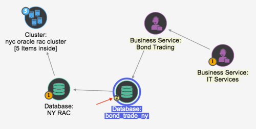
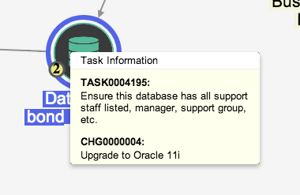

Managing CI Changes
| |
Note: This article applies to Fuji and earlier releases. For more current information, see Associated CIs on a Change Request at http://docs.servicenow.com
The ServiceNow Wiki is no longer being updated. Visit http://docs.servicenow.com for the latest product documentation. |
1 Overview
A key component of change management is tracking changes over time and ultimately the entire CI life cycle. Identification of planned and unplanned changes is also highly desirable. This is accomplished through the use of CMDB baselines. Baselines can be scheduled to occur every day, week, or month. Changes made through the change process are linked to the change request, and changes without an associated change request are also displayed. The current state of any CI in the CMDB can be compared against any baseline. Not only are basic attribute changes of a CI tracked, but also all related CIs and CI relationships.
For instructions on performing bulk CI changes, see Best Practice - Bulk CI Changes.
For information on proposed changes, see Configuring Proposed Changes to a Configuration Item.
{kind=link}
2 Affected CIs and Impacted Services
You can also manage CI changes with the related lists at the bottom of the Change Request form: Affected CIs and Impacted Services. Right-click the header bar on the Change Request form and select Refresh Impacted Services to populate the Impacted Services related list, based on the currently associated CI.
The Impacted Services related list represents a many-to-many relationship between the Task [task] and Business Service [cmdb_ci_service] tables, and displays affected business services. You can add this related list to any task form, such as Incident or Problem, and populate it manually if desired. Adding the related list to a form also adds the Refresh Impacted Services option to that form's context menu. Use the menu option to auto-populate the list based on the configuration item on the record. The menu option does not remove manually-added services from the related list, but does add business services related to the CI.
3 Adding Affected CIs to Change Requests Using the BSM Map
When a change request is associated to a configuration item, the change request record is accessible from the BSM map. This makes the affected services easy to assess. You can use the BSM map to identify dependent CIs affected by the change and then add them to the Affected CIs related list on the change request.
| |
Note: The BSM map shown in this procedure is available starting with the Eureka release. If you are using a version of the ServiceNow platform other than Eureka, see the related documentation in Business Service Management Map. |
- In the change request, click the BSM map icon (
 ) beside the Configuration item field.
) beside the Configuration item field.
- The system displays the configuration item in the map with all its dependent CIs. In this example, there is a critical change attached to the bond_trade_ny database. The map includes the business services that rely on the database. The database icon has a blinking glyph on the lower left edge that indicates trouble with the node.
- 
- Point to the glyph to display a list of tasks and issues with the CI.
- This database has one change and a follow-on task from a compliance audit. You can open each record from this list.
- 
- Click either task number to display the complete list of tasks attached to this server.
- You can see who is assigned to the change and can open the record for more information.
- To change the map configuration, select a format from the Layout field or use the filter panel to filter the map.
- The BSM map highlights the affected CIs, all of which are dependent on the database.
- To add an affected CI to the change for the database, right-click a highlighted node and select Add Affected CI from the context menu.
- Return to the change request, and look at the Affected CIs related list.
{kind=link}
{kind=link}
{kind=link}
{kind=link}
| Click the plus to view the procedure for versions prior to Eureka |
|---|
|
Once changes are attached to configuration items, they are visible in the business service map. This makes the impacted services easy to assess. The following screenshot shows a critical change attached to the bond_trade_ny database.
Clicking on the Related Issues icon displays the list of related tasks, including the change.
|
{kind=link}
{kind=link}